C組
組員：陳予欣、陳亮希、楊初淨、鍾勻瑨｜組長：楊初淨
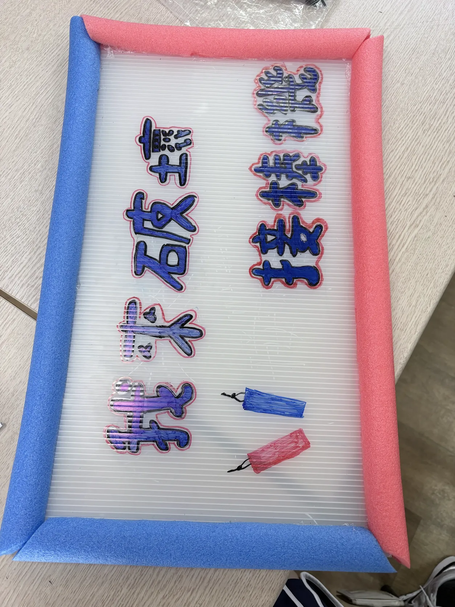
你擁有頂尖的反應力嗎？你有把握在接棒機被破壞掉之前拯救它嗎？快來挑戰我來破壞接棒機吧！
有四根棒子，他們會在隨機秒數和順序掉下來，玩家需要再掉到地板前把棒子接住，考驗反應力。
四顆馬達會隨機秒數、順序轉動，馬達的上方有一個扣住棒子的架子，再轉到下面時棒子就會掉下來。
安裝蓋子
把電路焊在一起（約三堂課）
完成線上版遊戲
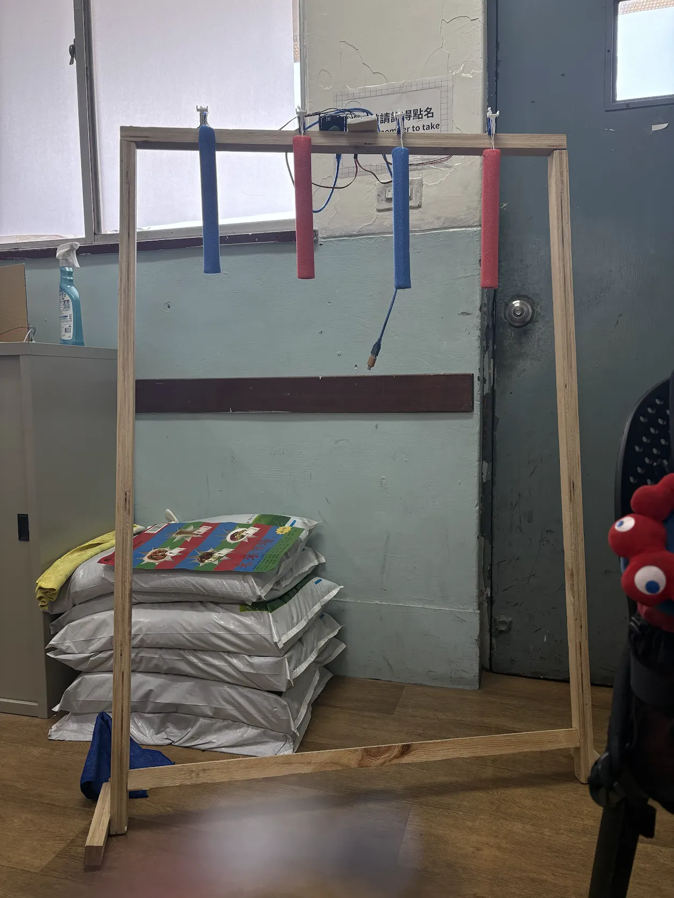
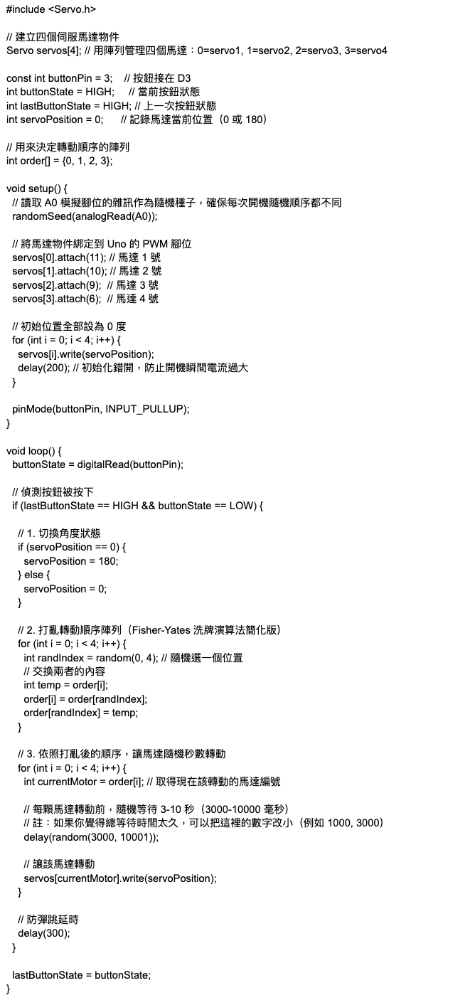
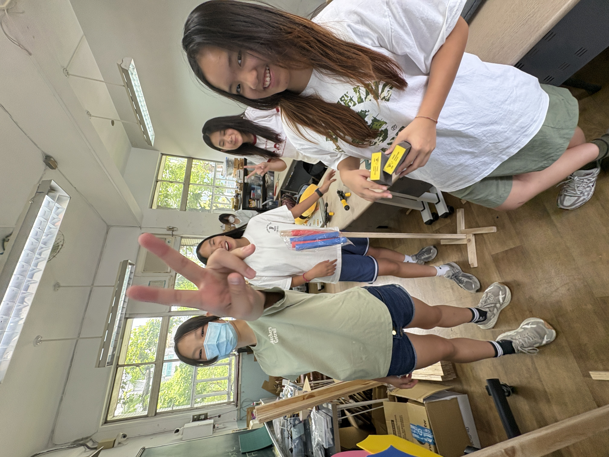
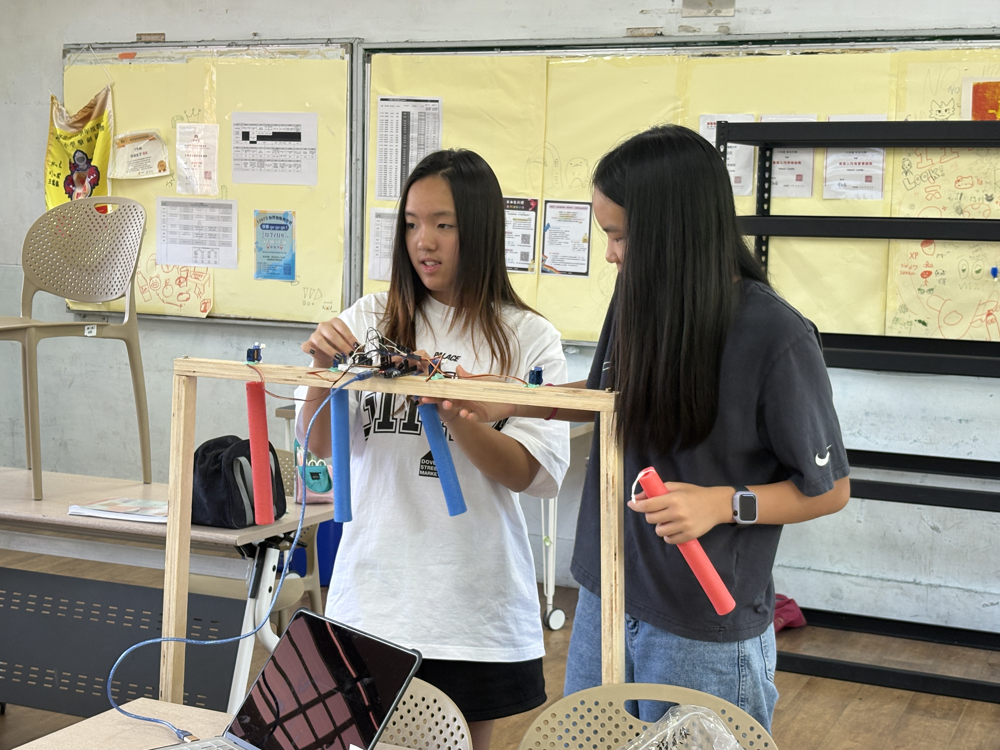
馬達程式與電路、架子製作
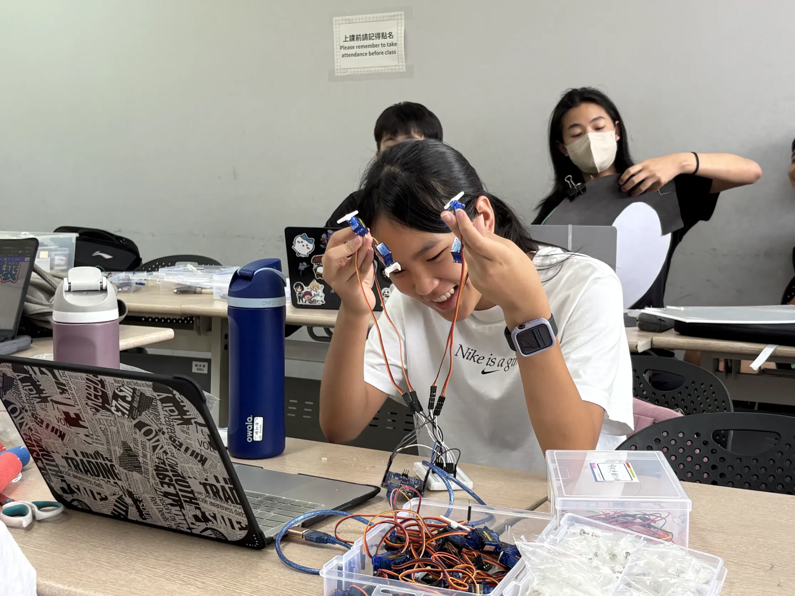
招牌製作、架子製作
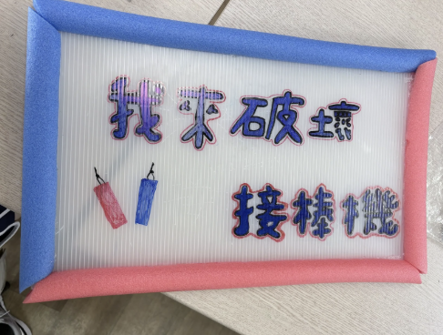
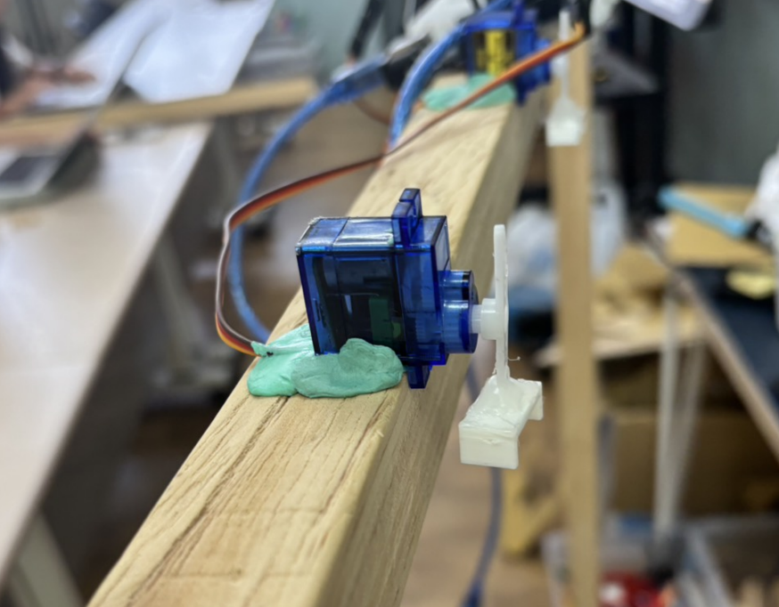
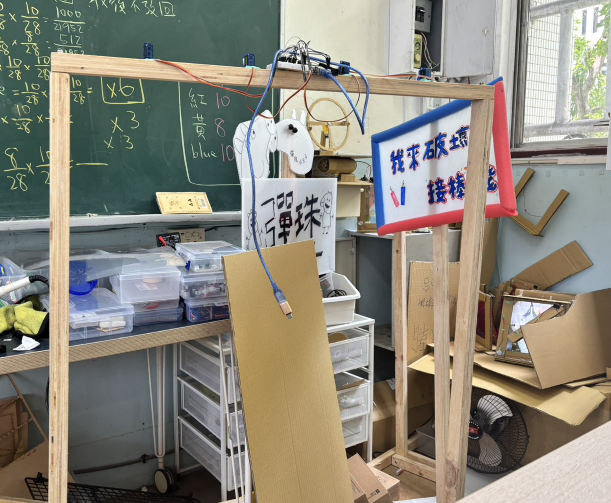
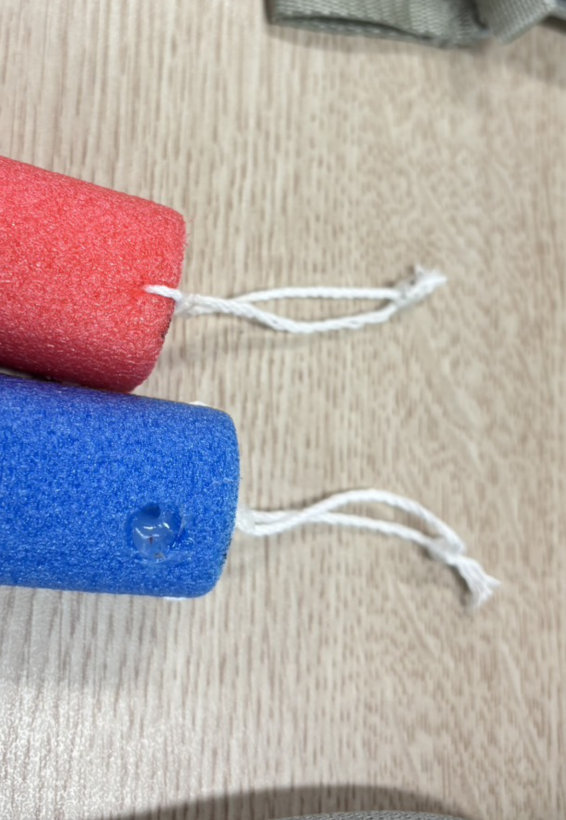
架子製作
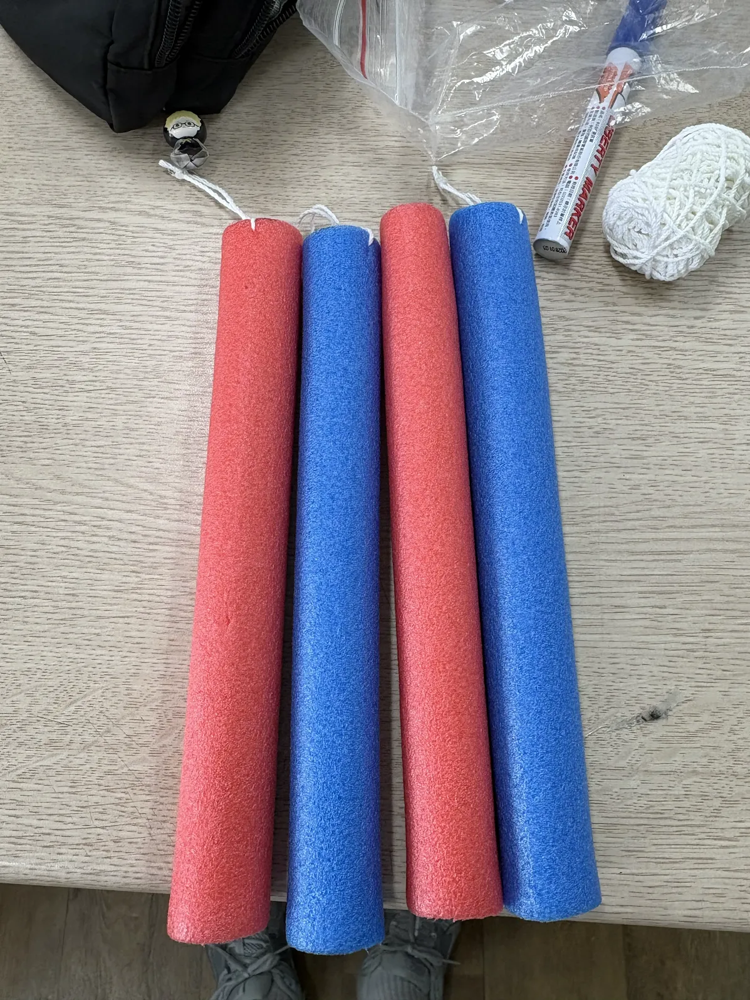
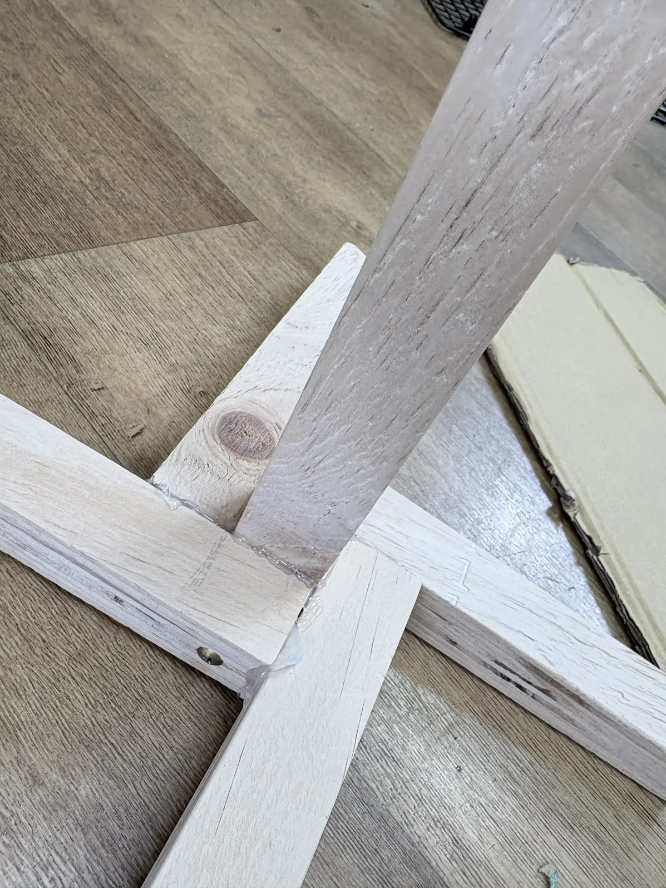
線上遊戲、架子製作